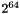
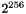

There are a range of hashing algorithms available in QCA.
Hashing algorithms are used with the Hash and MessageAuthenticationCode classes.
The MD2 algorithm takes an arbitrary data stream, known as the message and outputs a condensed 128 bit (16 byte) representation of that data stream, known as the message digest. This algorithm is considered slightly more secure than MD5, but is more expensive to compute. Unless backward compatibility or interoperability are considerations, you are better off using the SHA1 or RIPEMD160 hashing algorithms. For more information on MD2, see B. Kalinski RFC1319 "The %MD2 Message-Digest Algorithm". The label for MD2 is "md2".
The MD4 algorithm takes an arbitrary data stream, known as the message and outputs a condensed 128 bit (16 byte) representation of that data stream, known as the message digest. MD4 is not considered to be secure, based on known attacks. It should only be used for applications where collision attacks are not a consideration (for example, as used in the rsync algorithm for fingerprinting blocks of data). If a secure hash is required, you are better off using the SHA1 or RIPEMD160 hashing algorithms. MD2 and MD5 are both stronger 128 bit hashes. For more information on MD4, see R. Rivest RFC1320 "The %MD4 Message-Digest Algorithm". The label for MD4 is "md4".
The MD5 takes an arbitrary data stream, known as the message and outputs a condensed 128 bit (16 byte) representation of that data stream, known as the message digest. MD5 is not considered to be secure, based on known attacks. It should only be used for applications where collision attacks are not a consideration. If a secure hash is required, you are better off using the SHA1 or RIPEMD160 hashing algorithms. For more information on MD5, see R. Rivest RFC1321 "The %MD5 Message-Digest Algorithm". The label for MD5 is "md5".
The RIPEMD160 algorithm takes an arbitrary data stream, known as the message (up to  bits in length) and outputs a condensed 160 bit (20 byte) representation of that data stream, known as the message digest. The RIPEMD160 algorithm is considered secure in that it is considered computationally infeasible to find the message that produced the message digest. The label for RIPEMD160 is "ripemd160".
The SHA-0 algorithm is a 160 bit hashing function, no longer recommended for new applications because of known (partial) attacks against it. The label for SHA-0 is "sha0".
The SHA-1 algorithm takes an arbitrary data stream, known as the message (up to bits in length) and outputs a condensed 160 bit (20 byte) representation of that data stream, known as the message digest. SHA-1 is considered secure in that it is considered computationally infeasible to find the message that produced the message digest. For more information on the SHA-1 algorithm,, see Federal Information Processing Standard Publication 180-2 "Specifications for the Secure %Hash Standard", available from http://csrc.nist.gov/publications/. The label for SHA-1 is "sha1".
The SHA-224 algorithm takes an arbitrary data stream, known as the message (up to bits in length) and outputs a condensed 224 bit (28 byte) representation of that data stream, known as the message digest. SHA-224 is a "cut down" version of SHA-256, and you may be better off using SHA-256 in new designs. The SHA-224 algorithm is considered secure in that it is considered computationally infeasible to find the message that produced the message digest. For more information on SHA-224, see Federal Information Processing Standard Publication 180-2 "Specifications for the Secure %Hash Standard", with change notice 1, available from http://csrc.nist.gov/publications/. The label for SHA-224 is "sha224".
The SHA-256 algorithm takes an arbitrary data stream, known as the message (up to bits in length) and outputs a condensed 256 bit (32 byte) representation of that data stream, known as the message digest. The SHA-256 algorithm is considered secure in that it is considered computationally infeasible to find the message that produced the message digest. For more information on SHA-256, see Federal Information Processing Standard Publication 180-2 "Specifications for the Secure %Hash Standard", available from http://csrc.nist.gov/publications/. The label for SHA-256 is "sha256".
The SHA-384 algorithm takes an arbitrary data stream, known as the message (up to bits in length) and outputs a condensed 384 bit (48 byte) representation of that data stream, known as the message digest. The SHA-384 algorithm is a "cut down" version of SHA-512, and you may be better off using SHA-512 in new designs. The SHA-384 algorithm is considered secure in that it is considered computationally infeasible to find the message that produced the message digest. For more information on SHA-384, see Federal Information Processing Standard Publication 180-2 "Specifications for the Secure %Hash Standard", available from http://csrc.nist.gov/publications/. The label for SHA-384 is "sha384".
The SHA-512 algorithm takes an arbitrary data stream, known as the message (up to bits in length) and outputs a condensed 512 bit (64 byte) representation of that data stream, known as the message digest. The SHA-512 algorithm is considered secure in that it is considered computationally infeasible to find the message that produced the message digest. For more information on SHA-512, see Federal Information Processing Standard Publication 180-2 "Specifications for the Secure %Hash Standard", available from http://csrc.nist.gov/publications/. The label for SHA-512 is "sha512".
The Whirlpool algorithm takes an arbitrary data stream, known as the message (up to  bits in length) and outputs a condensed 512 bit (64 byte) representation of that data stream, known as the message digest. The Whirlpool algorithm is considered secure in that it is considered computationally infeasible to find the message that produced the message digest. For more information on Whirlpool, see http://paginas.terra.com.br/informatica/paulobarreto/WhirlpoolPage.html or ISO/IEC 10118-3:2004. The label for Whirlpool is "whirlpool".
1.6.3